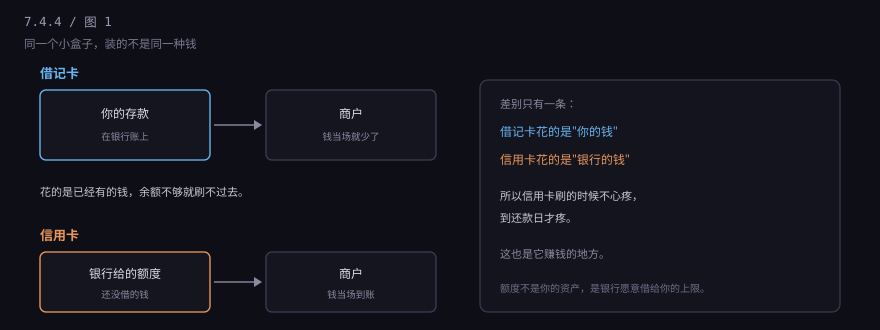
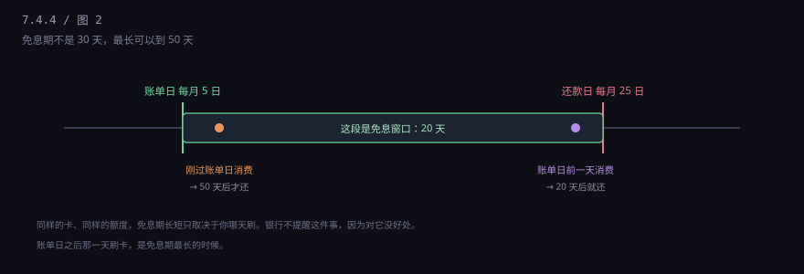
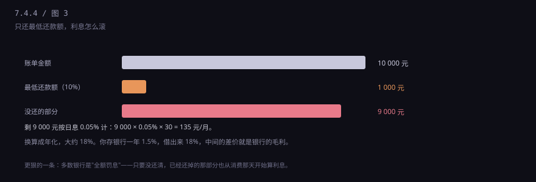

约 0.3 万字 · 4 张图 · 一张花的是你的钱，一张花的是银行的钱
借记卡和信用卡，外形几乎一样，刷卡的动作也一样， 但背后是两套完全不同的账。

借记卡（储蓄卡）背后是一个存款账户。 你刷 100，银行从你的账户余额里扣 100。余额不够，交易直接失败。 钱是你自己的，银行只是帮你搬。
信用卡背后是一个额度账户。 你刷 100，银行先替你把 100 付给商户，同时在你的账上记一笔"欠 100"。 钱是银行垫的，你在还款日之前还上，它一分利息都收不到。
所以信用卡的本质不是"卡"，是一笔随时可用的短期贷款， 额度就是银行愿意借给你的上限。它跟你有没有钱没关系， 跟它信不信你会还，关系很大。
信用卡有两个日子，你必须记住：账单日和还款日。
账单日，银行把这一个月你刷的钱汇总成一张账单； 还款日，是这笔账单最后的还款期限，一般是账单日之后 20 天左右。

为什么最长能到 50 天？因为你刷的那笔钱，要等到下一个账单日才被算进账单， 然后再加上 20 天的还款宽限。30 天账期 + 20 天宽限 = 50 天。
这件事银行不会主动告诉你，因为它希望你早还。 但对你自己来说，记住一句就够：大额消费，等等账单日之后再刷。
顺便把一张账单拆开看，你以后就不会被那堆数字绕晕：
本期应还金额：这一期你总共欠多少。
最低还款额：通常是应还的 10%，还上就不算逾期。
到期还款日：最后的期限，过了就是逾期。
上期余额 / 本期新增 / 本期已还：一个流水账，
告诉你这个数字是怎么来的。
循环利息：如果你上期没还清，这一行会冒出来，
它就是你为"晚还"付的钱。
还有几种消费，没有免息期，从发生当天就开始计息： 取现、转账到储蓄卡、以及部分银行的分期首期。 账单上这些项目的利息是单独算的，不会混在那 50 天里。
账单出来，下面有一行小字："最低还款额 1000 元"。 手头紧的时候，这行字看起来像救命稻草。
它的确能救你——只要还了最低额，就不算逾期，不会上征信。 但代价是：剩下的钱开始计息，而且是从消费那天开始算，不是从账单日开始算。

算一遍：账单 10000，还了 1000，剩 9000。 9000 × 0.05% × 30 天 = 135 元/月。一年下来，利息接近 2000。
还有个更隐蔽的规则，叫全额罚息： 只要你没还清，已经还掉的那部分也会从消费当天开始算利息。 也就是说，你还了 1000，那 1000 也白还了——它照样在计息。 这几年有些银行改成"未还部分计息"，但条款要自己看。
所以最低还款额的正确用法只有一个：应急一次，然后尽快还清。 连续几个月只还最低，你会发现自己还的钱绝大部分是利息，本金几乎没动。
那如果确实还不上，是选最低还款还是选分期？
算同一个 10000 元、拖三个月的情况： 最低还款的日息 0.05%，三个月利息大约 450 元， 而且本金还得你自己一点点还； 分 3 期的手续费一般是每期 0.7% 左右，三期大约 200 元， 但要求你每期还本金。
看起来分期便宜，但分期是一次性锁定， 提前还清通常手续费照收。最低还款更灵活，代价是贵。 短期周转不上下个月就能还清的，选最低； 已经确定要拖三个月的，选分期。
还有一条红线：连最低还款都没还，就是逾期。 除了上征信，银行还会收一笔违约金， 按未还部分的 5% 算，一次性。
分期的手续费通常写成"每期 0.6%"。 12 期，一年 7.2%，看起来比 18% 便宜多了。
但这是个数学陷阱：手续费是按最初的本金算的，而你的本金每个月都在减少。
借 12000 分 12 期，每月还 1000 本金 + 72 手续费。 第一个月你占用银行 12000，最后一个月只占用 1000， 但你每个月都在按 12000 交 72 块。 用内部收益率一算，真实年化大约 13%，不是 7.2%。
记住一条经验：分期手续费率乘以 1.8 到 2，大致就是真实年化。 0.6% × 12 = 7.2%，真实大约 13%～14%。
额度是银行根据你的收入、资产、征信记录给的。 刚毕业的学生通常 3000 到 5000，工作几年能提到几万。 额度不是越高越好——它算进你的总负债，办房贷时会被看到。
年费：普卡一般刷 3 到 6 次免年费，白金卡可能要用积分抵或者硬交。 办卡时业务员说"免年费"，通常指的是"刷够次数免"。
征信：信用卡的每一期还款都会上报。 逾期一天可能只是短信提醒，逾期超过 30 天就会在报告上留一个"1"。 这个 1 会跟你五年，从你把钱还清那天开始算。
还有一件事很多人不知道：信用卡取现没有免息期。 取出来当天就开始计息，而且通常还有一笔取现手续费。 它是应急工具，不是省钱工具。
再补三个常被问到的点。
临时额度：过节、出差前能申请，一般给一两个月。 它不能分期、不能最低还款滚动，到期必须还清， 而且用超了会影响提额。
副卡：挂在主卡下面的第二张卡，共用额度， 账单合并到主卡。父母给孩子办、公司给员工办，都是这个。 副卡的每一笔消费，主卡都能看到。
销卡：不想用了要打客服正式销户， 不是把卡剪了就完事。剪卡只是销毁介质， 账户还在，年费照收，欠款照记。 销户前确认两件事：没有欠款、没有溢缴款。
假设你 1 月 6 日刷了 10000 买电脑（账单日 5 号，刚过一天，免息期最长）， 这笔钱进 2 月 5 日的账单，2 月 25 日到期。 你手上钱不够，选了最低还款 1000。
从 1 月 6 日到 2 月 25 日，这 50 天是免息的， 你只欠 9000。但从 2 月 26 日开始， 这 9000 按日息 0.05% 计，每天 4.5 元。
3 月你继续只还最低，4 月也只还最低。 三个月下来，你还了 3000 多，但本金只减了两千出头， 剩下的一千块全是利息。 这就是"最低还款"最反直觉的地方：它给你一种在还款的感觉，实际在还利息。
更麻烦的是，这种状态会让银行觉得你现金流紧张。 你想提额、想办房贷，审批的人看到"连续三个月最低还款"， 会直接把你归到"高风险"那一栏。
所以正确的做法是：要么全额，要么分期，别长期挂在最低那一档。
逾期不是"晚几天没事"。它是有阶梯的：
1 到 30 天：短信、电话提醒，上征信记一个"1"。
31 到 60 天：催收升级，可能打给紧急联系人，记"2"。
61 到 90 天：额度可能被降，记"3"。
90 天以上：进入不良，可能被起诉，记"4"以上。
这些数字会在报告上留五年，从你把钱还清那天开始算。 不还，五年永远不开始。
该办，但要按"借记卡的方式"用。
办的理由不是"提前消费"，是攒信用记录。 央行征信里一片空白的人（业内叫"白户"），第一次办房贷时 银行没法判断你，要么拒，要么利率上浮。 有一张正常用了两三年的信用卡，比什么都没有强得多。
怎么用：每个月只刷你本来就要花的钱，账单出来当天全额还清。 不碰最低还款，不碰分期，不碰取现。 这样银行赚不到你一分钱，你白拿 20 到 50 天的免息期和一条干净的信用记录。
至于那个行李箱——它值一百块，你为了它办的卡可能要还好几年。 这不是道德问题，是算术问题。